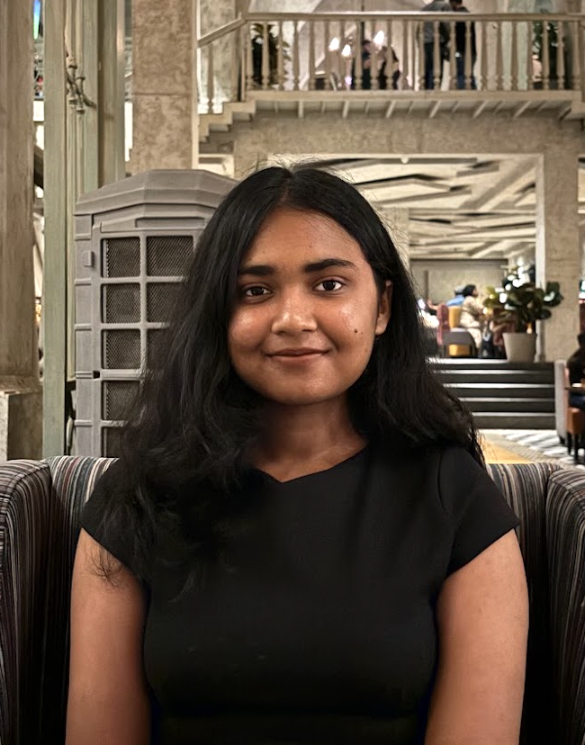

Hi! I'm Ananya, a sophomore pursuing Computer Science Engineering at Kalinga Institute of Industrial Technology, Bhubaneswar. My areas of interest include Web Development and Data Structures and Algorithms. I am passionate about explanding my skillset to build scalable, real- world solutions and driving innovation within collaborative technical teams in a competitive internship environment.
Contact Me About Me
Kalinga Institute of Industrial Technology, Bhubaneswar (2024-present)
Bachelor's of Technology, Computer Science and Technology
Delhi Public School, Gaya (2022-2024)
All India Senior School Certificate Examination, PCM (Science) + Computer Science
Nazareth Academy, Gaya (2013-2022)
All India Secondary School Examination